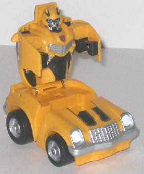
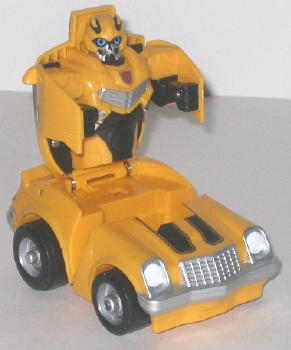

Cyber Slammer Bumblebee's
vehicle mode is a kiddie '70s camaro. Seeing as how the Cyber Slammer line
is aimed at the youngest of the young-- three years and older -- kiddie
proportions are more than appropriate. The mold detailing is fairly sparse--
as is obviously appropriate for a toy aimed at kids scarcely beyond their
toddler stage-- but the paint detailing is quite good, with both bumpers,
the wheels, the head and tail lights, and the windows all having paint
detailing, as well as the pre-requisite black stripes that make the 'Bee
the 'Bee. (Heck, he actually looks more "finished" paint-wise in car mode
than the mainline deluxe version of '70s Camaro Bumblebee!) His license
plate also says "BUMBL-B", which is a pretty nice touch.
Like all Cyber Slammers,
Bumblebee can be locked in car mode by pushing the white tab on the bottom
of the toy forward-- otherwise, when you slam down Bumblebee's robot body
into his car mode, the car will take off (providing he's on a flat surface),
and after scooting about six feet or so the robot mode body will pop back
up again. Because of this gimmick, Bumblebee doesn't really have any lower
body in robot mode, just most of his car mode. His main body, head, and
arms are molded onto the underside of his car mode roof and doors. The
detailing on the robot bits is quite good in this mode as well, with the
optics "chibi-fied" to make Bumbles a bit more cute and kid-friendly. As
for articulation, his head can turn and his arms can move at the shoulders,
though the latter snap back into their default position after you let go
of them.
Cyber Slammer '70s Bumblebee
is typical of the toys in the subline-- the gimmick is rather cool, and
it's a nice toy for little kiddies that can't handle real transformations
yet, but as far as adult collectors go I wouldn't recommend it UNLESS A.
You really like such pull-and-go gimmicks and B. You don't mind cute kiddie
toys with practically no posability.
No Stats
Review by Beastbot